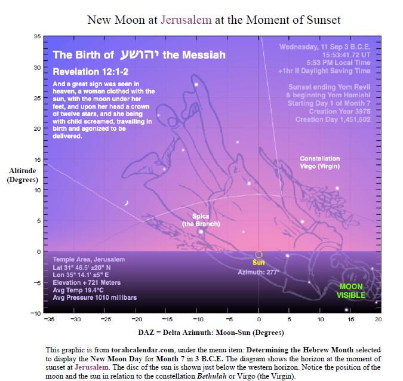
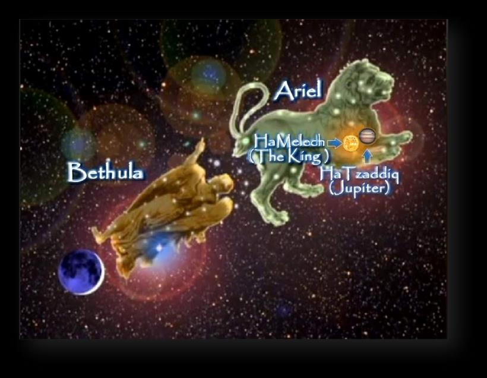
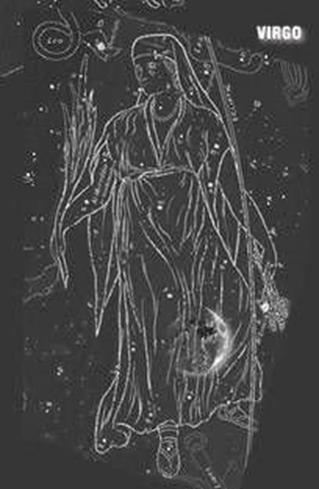
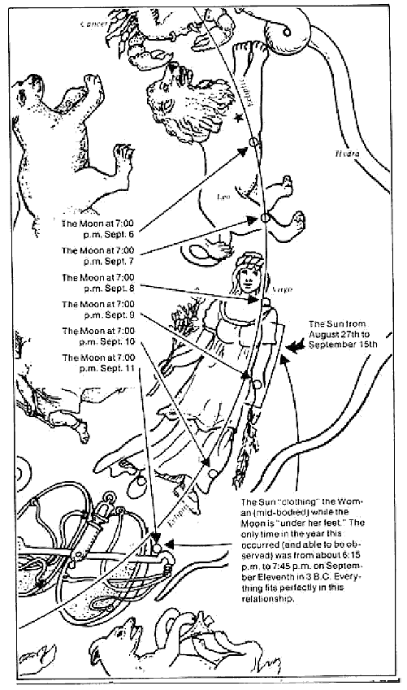
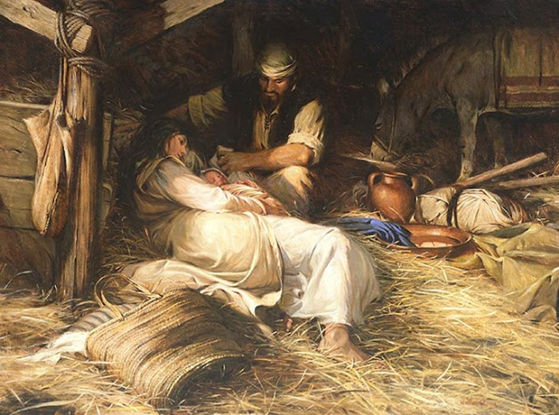
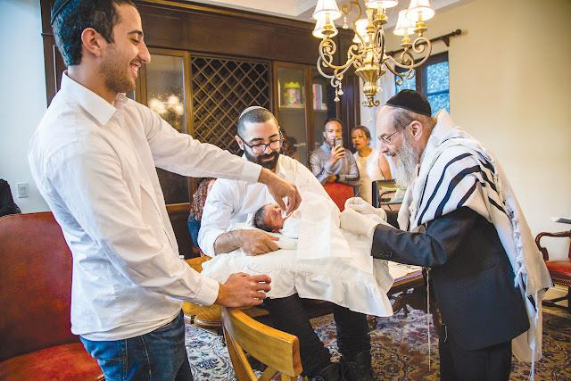

Contents

Agreeing with the Astronomical Record and the inquiry done by Dr. Ernest L. Martin, (who created the book “The Star that Astonished the World”), the planetary arrangement in Chazon/Revelation12:1-5 was being fulfilled on the night our Messiah Yahushua was born!
Chazon/Revelation 121And a great sign was seen in the heaven: a woman clad with the sun, with the moon under her feet, and on her head a crown of twelve stars. 2And being pregnant, she cried out in labour and in pain to give birth. 3And another sign was seen in the heaven: and see, a great, fiery red dragon having seven heads and ten horns, and seven crowns on his heads. 4And his tail draws a third of the stars of the heaven and throws them to the earth. And the dragon stood before the woman who was about to give birth, to devour her child as soon as it was born. 5And she bore a male child who was to shepherd all nations with a rod of iron. [The/Psa_2:9] And her child was caught away to Elohim and to His throne. [See also Yesh/Isa_26:17, Yesh_66:7, Mic_4:9-10]
That night, the shepherds witnessed the constellation of "Virgin" (Bethulah) and saw her in labour, giving birth to "The Lion" (Ariel).

The sun was positioned at the center of the Virgin's body, and our Savior is described as "The Sun of Righteousness," according to:
Malaki/Malachi 4
2“But to you who fear My Name the Sun of Righteousness shall arise with healing in His wings. And you shall go out and leap for joy like calves from the stall.
The initial sliver of the moon was situated below the Virgin's feet, and she had a crown of stars adorning her head, representing the Twelve Tribes of Yisra’el.

The alignment of Jupiter and Venus occurred within these two constellations.
The Hebrews historically referred to the alignment of these two planets as "The King of Righteousness. "
Jupiter was given a new name by the non-believers in honour of a pagan god, but the Ancient Hebrews referred to it as "Ha'Tzadiq" meaning "The Righteous. "
The heathens gave Venus a new name after a pagan deity, while the Ancient Hebrews referred to it as "Ha'Malek" (The King).
The combination of these two planets represents "The King of Righteousness," also known as Malkiy-Tzedeq (Melchizedek).
For a two-year period, the alignment of the planets in the sky prompted the wise men from the East to travel to Běyth Leḥem to visit the King.
Roy Reinhold's research on the Bible Code aligns with Scripture by accurately determining the date of the Messiah's conception as December 13th in 4 B. C on the Gregorian Calendar. This date corresponds to the 24th day of the Hebrew month of Kislev.
Haggai 218Consider now from this day forward, from the twenty- fourth day of the ninth month, from the day that the foundation of the Hěḵal of יהוה was laid, consider it: 19Is the seed yet in the storehouse? And until now the vine, and the fig tree, and the pomegranate, and the olive tree have not yielded fruit! From this day on I shall bless you!’ ”
Zerubbabel Chosen as a Signet
20 And a second time the word of יהוה came to Ḥaggai on the twenty-fourth day of the new moon, saying, 21 “Speak to Zerubbaḇel, the governor of Yehuḏah, saying, ‘I am shaking the heavens and earth. 22 And I shall overturn the throne of reigns. And I shall destroy the might of the reigns of the nations, and overturn the chariots and their riders. And the horses and their riders shall come down, each by the sword of his brother. [Dan_2:44] 23 In that day,’ declares יהוה of hosts, ‘I shall take you, Zerubbaḇel My servant, son of She’alti’ěl,’ declares יהוה, ’and shall make you as a signet, for I have chosen you,’ declares יהוה of hosts.”
By adding 271 days to the initial date, it brings us to September 11th in 3 B. C. The time is 6:12 in the evening. Shortly before the sun goes down. This date corresponds to the first day of the seventh month in the Hebrew calendar, known as Tishri, also known as Ethaniym.

For more information on this click on this link:
https://www.askelm.com/star/index.asp
What is the reason for using 271 days for the duration of gestation?
1.) The typical gestation period for a male baby is 271 days, equivalent to 9 months of 30 days each with an additional day for delivery.
2.) The female gestation period is typically 10 days longer, lasting 281 days, due to the more intricate nature of the female anatomy.
3.) The additional 10 days required for a female's pregnancy can be seen as a connection to the 10 Virgins parable and the 10 Days of Awe observed between the Feast of Trumpets and the Day of Atonement from a prophetic perspective.
4.) The numerical value of the Hebrew word for "pregnancy," which is "herayon," is 271.
Besides the work of these two individuals, Dr. Ernest L. Martin and Roy Reinhold, there is additional supporting evidence in the Scriptures, which confirms that our Savior was conceived during Chanukkah and born nine months later on the Feast of Trumpets.

The Courses of the Temple Priests
For a more detailed and historical explanation of the Priestly Courses, I highly recommend downloading and studying this PDF file from the ministry of “TorahCalendar.com.”
http://torahcalendar.com/PDF/24PriestlyCourses.pdf
In Summory
In the Luqas's gospel, the angel Gabriel visited the priest Zeharyah/Zechariah, announcing that he and his wife Elisheba/Elizabeth would conceive a son despite her barrenness. In Luqas's gospel, we learn that Zekaryah was from the division of Abiyahu/Abijah, which is a significant clue.
In Dibre HaYamim Aleph/1st Chronicles 24, we also see King David establishing a schedule for the priesthood in the Temple.
Each priest served two weeks per year (plus additional days during feasts) and then returned home after completing their Temple duty. Zekaryah was of the division of Abijah, indicating his service course and time of year. The courses would repeat annually in the spring around the biblical New Year in the month "Aviv," two weeks before Pesach.
Zekaryah’s course was the eighth course in the year, and since each course was two weeks, this would have been the sixteenth week in the year. He served in the Hebrew month Sivan, around the Feast of Weeks or Shavuot/Pentecost. Assuming Zekaryah was in a hurry to get home to Elisheba to impregnate her, we must conclude that Elisheba conceived after Zekaryah's Temple duty was over. 3rd Shabbat of the 3rd month of Sivan.
Yochanan/John’s Birth During the Season of Pesach/Passover
271 days from Zekaryah's return from Temple duty would indicate that Yochanan was probably born around Passover. Yochanan was born on the 1st of Aviv (Nisan), 14 days before Passover. Yochanan the Baptist was said to come "In the spirit and power of Eliyahu/Elijah" (Mattithyahu/Matthew 11:14), so it makes sense that he would have been born around Pesach/Passover. In Matithyahu 11:12-14, our Messiah identified Yochanan as the anticipated Eliyahu. In Mattithyahu 17:12-13, Yahushua said Yochanan was "The Eliyahu who had already arrived." "
The Jewish people believed that the Spirit of Eliyahu needed to come before the Messiah could establish The Tabernacle of David on earth." The "Eliyahu Cup" is included in the Pesach Seder ceremony every year for this reason. It reminds us that the Messiah must come before anything else can happen. Malaki/Malachi 4:5-6 says "Eliyahu/Elijah" must come first.
Luqas/Luke 136“And see, Elisheva your relative, she has also conceived a son in her old age. And this is now the sixth month to her who was called barren
This is how we know that our Messiah was 6 months younger than his cousin Yochanan.
Six months (or 180 days) after the 1st of Aviv in 3 B. C falls on the date of the Feast of Trumpets. Scripture does not specify the exact timing of the child's birth, but it is suggested that Yahushua could have been born sometime between the Feast of Trumpets and the Feast of Tabernacles based on the timeline.
Nevertheless, the testimonies of all other supporting witnesses indicate that our Savior was born at an earlier stage of the pregnancy, specifically on the Feast of Trumpets.
Can it be that Yahushua was circumcised on Yom Kippur?
Initially, it is symbolically significant that his circumcision occurred on the Day of Atonement/Yom Kippur, as the act of circumcision involves the sprinkling of the child's blood.
A prophecy about the Messiah was made, predicting that he would shed his blood to cleanse the nations.
Yeshayahu (Isaiah) 52 KJV15So shall he sprinkle many nations; the kings shall shut their mouths at him: for that which had not been told them shall they see; and that which they had not heard shall they consider.
The Messiah's blood was symbolically presented in the Temple during his circumcision, foreshadowing his future fulfilment of the Yom Kippur sacrificial goat.
Yochanan (John) 129“…… Behold the Lamb of Elohim, which takes away the sin of the world.”
Furthermore, the removal of the foreskin is seen as a representation of removing the "veil to our hearts" as mentioned in Qorintiyim Bet/2 Corinthians 3:15. This act allows us to see יהוה "face-to-face," signifying the attainment of spiritual sight. The priest at the Temple would go behind the "veil," similar to a foreskin, once a year on Yom Kippur to directly encounter יהוה.
This is the reason why the Jewish community has given the nickname "Face-to-Face" to Yom Kippur. When our Messiah arrives at the Mount of Olives in the future (as mentioned in Zekaryah/Zechariah 12:10), he will come into direct contact with the House of Yehudah, and they will finally acknowledge him. This significant event will also occur on Yom Kippur.
This indicates that they will encounter their Messiah directly, and the symbolic barrier representing the hardness of their hearts will be removed.
Qorintiyim Bet (2nd Corinthians) 313And not as Mosheh, which put a veil over his face, that the children of Yisra’el could not steadfastly look to the end of that which is abolished.
The Torah/Law is no longer given to us in stone tablets but is instead placed in a circumcised heart. The stone tablets of the Torah were intended to serve as a reminder that our hearts were as unyielding as stone. Sha’ul did not imply that the Mosaic Law has been done away with.
Yechezqel (Ezekiel) 1119And I will give them one heart, and I will put a new spirit within you; and I will take the stony heart out of their flesh, and will give them a heart of flesh
Yechezqel (Ezekiel) 3626A new heart also will I give you, and a new spirit will I put within you: and I will take away the stony heart out of your flesh, and I will give you a heart of flesh.
Ibriym (Hebrews) 1020By a new and living way, which he has consecrated for us, through the veil, that is to say, his flesh.
Agreeing with the declaration of Ernest L. Martin, the birth of Yahushua took put at twilight on the Devour of Trumpets around 6- 7 p.m. – 6:12 to be exact!
According to the Torah, the Day of Atonement (Yom Kippur) is to start on the evening of the ninth day of the seventh month of Tishri.
Vayiqra (Leviticus) 2332It shall be unto you a Shabbat of rest, and you shall afflict your souls: in the ninth day of the month at evening, from evening unto evening, shall you celebrate your Shabbat.
After his birth, we should be able to calculate eight days until his circumcision takes place right before Yom Kippur.

The Messiah was born in the evening on the 1st of Tishri, shortly before the 2nd of Tishri.
2nd of Tishri sundown: day #1
3rd of Tishri sundown: day #2
4th of Tishri sundown: day #3
5th of Tishri sundown: day #4
6th of Tishri sundown: day #5
7th of Tishri sundown: day #6
8th of Tishri sundown: day #7
9th of Tishri sundown: day #8 {Messiah circumcised.}
9th of Tishri at sundown becomes the 10th of Tishri, Yom Kippur begins… (Vayiqra/Leviticus 23:32).
http://torahcalendar.com/PDF/BirthOfMessiah.pdf
A Few Arguments Why Yahushua Could Not Have Been Born in Sukkot
Think about it: One of the primary reasons is clearly stated in Luqa/Luke 2:3, where it says that "all" (referring to the Yisra’elites) went to their own city to be taxed.
Luqas (Luke) 21And it came to be in those days that a decree went out from Caesar Augustus for all the world to be registered. 2This took place as a first registration while Quirinius was governing Suria. 3And all were going to be registered, each one to his own city. 4And Yosěph also went up from Galil, out of the city of Natsareth to Yehuḏah, to the city of Dawiḏ, which is called Běyth Leḥem, because he was of the house and lineage of Dawiḏ, 5to be registered with Miryam, who was engaged to him – being pregnant. 6And it came to be, that while they were there, the days were filled for her to give birth. 7And she gave birth to her first-born Son, and wrapped Him up, and laid Him down in a feeding trough (manger), because there was no room for them in a lodging place.
They were in Běyth Leḥem /Bethlehem, rather than in Yerushalayim, at the time of the Messiah's birth. Běyth Leḥem is situated 8 kilometers from Yerushalayim, and traveling by donkey typically takes 2-3 hours to complete the journey. Why would Yoseph be looking for a room at the Inn? If this was during Sukkot, he would have been in Yerushalayim constructing a sukkah for them to live in. This indicates that they had not yet begun observing the Feast of Tabernacles, and it would be another two weeks before they did so. Furthermore, they placed the infant in a feeding trough, rather than a temporary shelter.
What is a manger? According to The Greek Lexicon:
#G5336. phatne fat'-nay from pateomai (to eat); a crib (for fodder):--manger, stall.
According to the English Dictionary:
“a long open box or trough for horses or cattle to eat from.”
This identical term is found in the book of Luqas/Luke 13:15 when Yahushua challenges the Pharisees on their actions regarding saving the life of an animal on the Shabbat.
Luqas (Luke) 1315The Master then answered him, and said, You hypocrite, do not each one of you on the Shabbat loose his ox or his donkey from the stall (manger), and lead him away to watering?
His parents did not place him in a sukkah traditionally used for the Feast of Sukkot/Tabernacles, but rather in an animal stall.
In the biblical passage of Ma’asei/Acts 18:3, it is stated that the Apostle Sha’ul practiced the trade of tent-making. It is widely accepted among scholars that Sha’ul was most likely responsible for the creation of prayer shawls, also known as portable prayer tents, rather than large tents utilized by shepherds.
Ma’asei (Acts) 183And because he was of the same trade, he stayed with them and was working, for they were tentmakers by trade.
The Greek word for “tentmaker,” is:
G4635 σκηνοποιός skēnopoios skay-nop-oy-os'
From G4633 and G4160; a manufacturer of tents: - tentmaker.
Strong's #4633: skene (pronounced skay-nay')
apparently akin to 4632 and 4639; a tent or cloth hut (literally or figuratively):--habitation, tabernacle.
Thayer's Greek Lexicon:
skēnē
1) tent, tabernacle, (made of green boughs, or skins or other materials)
2) of that well known movable temple of God after the pattern of which the temple at Jerusalem was built
According to the biblical passage in Luqas 2:7, the infant Messiah was placed in a manger, which is typically understood as an animal stall, crib, or feeding trough. If one were to posit that the birth took place in a sukkah, as depicted in the aforementioned illustration, the Greek term used in Luqas 2:7 would indicate that the child was "laid in a skene," or a tabernacle.
Certainly, he would have lived in a sukkah with his parents two weeks later, and there is no dispute about that. As a two-week old baby, he certainly observed the Feast of Tabernacles with his parents and truly was "The Word made flesh, dwelling among us" (Yochanan/John 1:14).
The Greek term "skenoo," as used in Yochanan/John 1:14, translates to "to dwell in a tent," indicating the act of residing in a temporary structure.
This phenomenon is the basis for the assumption among numerous Messianic Jews that Yahushua was born during the festival of Sukkot, as a result of the significance of the term "dwelt" in Yochanan/John 1:14. Indeed Yahushua dwelt within our midst in the capacity of a two-week-old infant.
Think about it: The angels, referred to as malakiym, instructed the Shepherds to journey to Běyth Leḥem in order to witness the infant. On the occasion of the Feast of Tabernacles, it is likely that the angels would have instructed the shepherds to travel to Yerushalayim in order to present an offering.
According to Yisraelite religious laws, it is mandatory for all male adherents to undertake a pilgrimage to the city of Yerushalayim and to present themselves at the Temple on three separate occasions throughout the year, specifically during the festivals of Passover, the Feast of Weeks (Shavuot/Pentecost), and The Feast of Tabernacles (Sukkot). References to Shemoth/Exodus 23:17 and Devarim/Deuteronomy 16:16 can be found in the biblical text.
Think about it: According to the biblical text in Vayiqra/Leviticus 12:2, Miryam would have been required to observe a period of uncleanness for seven days following the birth of a male child. This would have necessitated her staying in a separate Sukkah from her husband, Yoseph, if the birth had occurred during the festival of Sukkot.
The canonical narrative attests that both individuals remained in the same animal enclosure, known as a manger, with the infant, due to the absence of accommodation at the Inn. Yoseph's obligation to present himself at the Temple to make a sacrifice during Sukkot would have resulted in ritual impurity, rendering him ineligible to perform the sacrificial offering.
Think about it: If the birth of the Messiah had occurred during Sukkot, it would have necessitated Yoseph's presence at the Temple in Yerushalayim, located 8 kilometers away, in order to offer a sacrifice. The notion that he would have abandoned Miryam during her labour in Běyth Leḥem is not rational.
Yoseph would have been rendered impure by the ritual and unable to make an offering at the Temple during Sukkot after aiding his wife in giving birth. According to Vayiqra/Leviticus 12:2, if a woman has a baby boy, she will be considered ceremonially impure for seven days.
By the time Yom Kippur arrived, she would have finished the initial seven-day period of uncleanness, as specified in Vayiqra/Leviticus 12:4, followed by an additional 33 days of purification. This implies that she would have had the opportunity to participate in the circumcision ceremony at the Temple, despite her obligation to stay within "The Women’s Court."
It doesn't make sense to believe that Yoseph would take the child to the Temple for circumcision without his mother being there. Riding on a donkey took 2-3 hours each direction, and the child required nursing every 2-3 hours.
Think about it: After fasting for 40 days, Yahushua started his ministry by going to the Synagogue and reading from the Yeshayahu/Isaiah 61 scroll in Luqas/Luke 4. On Yom Kippur, the High Priest (Melchizedek) proclaimed "The Acceptable Year of יהוה. " This declaration could only be made by the High Priest on Yom Kippur.
It is stipulated in the biblical passage found in Bemidbar/Numbers 10:8-10 that the responsibility of making declarations with the blowing of silver trumpets rested upon the sons of Aharon, who held the esteemed position of High Priests. Yahushua possessed the rightful authority as the celestial High Priest, in the order of Melchizedek, to issue such proclamations.
It can be inferred that Yahushua was at least 30 years old at the time of making the declaration in the Synagogue. This is supported by the requirement stipulated in Bemidbar/Numbers chapter 4:3, which states that a man must be at least thirty years of age to hold the office of the priest.
Bemidbar (Numeri) 43from thirty years old and above, even to fifty years old, all who enter the service to do the work in the Tent of Appointment.
Based on the passage in Luqas/Luke 3:23, which indicates that Yahushua was "Beginning to be about 30 years old" at the time of his baptism 40 days earlier, it can be inferred that he reached the age of 30 on Yom Teru’ah. This timing would have allowed him to proclaim "The acceptable year" on Yom Kippur as a 30-year-old High Priest.
Had he been born on Sukkot, his 30th birthday would have been five days shy, rendering him ineligible to proclaim "the acceptable year. "
The Hebrew Lexicon defines the word for "seven" in Hebrew as follows, which is an important fact:
H7651 sheba` sheh'-bah or (masculine) shibrah {shib-aw'}; from 7650; a primitive cardinal number; seven (as the sacred full one); also (adverbially) seven times; by implication, a week; by extension, an indefinite number:--(+ by) seven(-fold),-s, (-teen, -teenth), -th, times). Compare 7658.
H7650 shaba` shaw-bah' a primitive root; propr. to be complete, but used only as a denominative from 7651; to seven oneself, i.e. swear (as if by repeating a declaration seven times):--adjure, charge (by an oath, with an oath), feed to the full (by mistake for 7646), take an oath, X straitly, (cause to, make to) swear.
The definitions above demonstrate that the origin of the number "seven" can be traced back to a Hebrew word meaning "to promise, to swear, to complete. "
Yahushua was capable of fulfilling the covenant as both the Kinsman Redeemer and High Priest (Tehillim/Psalm 110:4), he is the one who was appointed to his position by יהוה.
Ib’rim (Hebrews) 721For those [Aharonic High] priests were made without an oath; but this [Melchizedek] with an oath by him that said unto him, יהוה sware and will not repent, You are a priest forever after the order of Melchizedek.